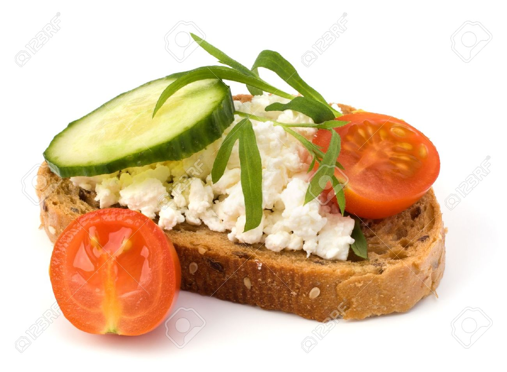
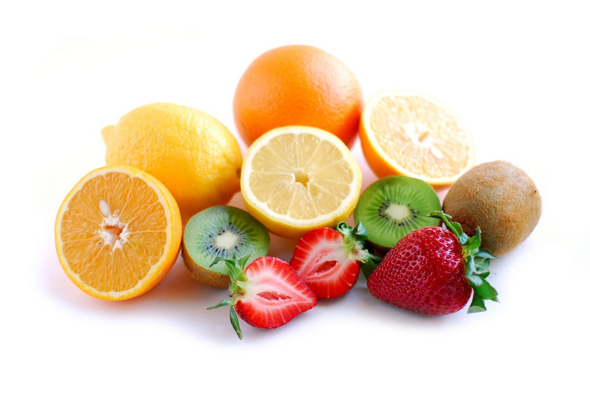
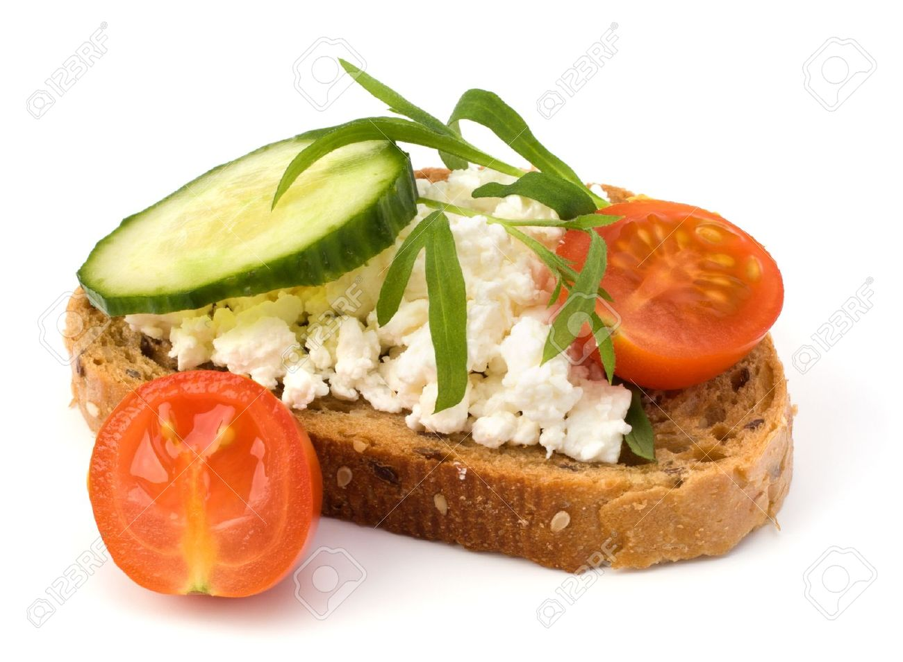
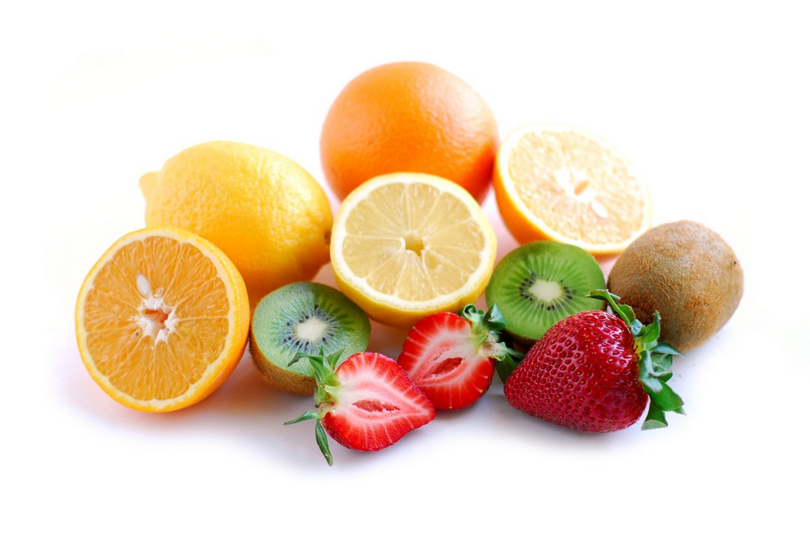

Healthy Living
HOME | ARTICLES | RECIPIES | BLOGS
Why is it important?
- Eating well boosts energy and helps you feel good
- Proper vitamin and nutrient intake helps maintain a young, youthful appearance
- Supports immune system
- Prevents sickness and disease
- Improves overall quality of life
Suggested Daily Serving Ratio
| Food Group |
Number of servings |
How often |
| Meat/Protein |
2-3 servings |
Per Day |
| Dairy |
2-3 servings |
Per Day |
| Fruit |
2-5 servings |
Per Day |
| Vegetables |
4-5 servings |
Per Day |
| Grains |
3-5 servings |
Per Day |
| Seafood |
2-4 servings |
Per Week |
How to get started:
- Find a healthy diet outline that works for you, everyone is different!
- OUTLINE your plan, dont force yourself to follow strict rules and resritictions
- Introduce more organic foods rather than conventional brands
- Start meal planning or find a system that works best for your lifestyle
- Get inspiration and cooking ideas online
- Always ask a healthcare professional about any serious questions or concerns
Here are a few recipe blogs to help get you started